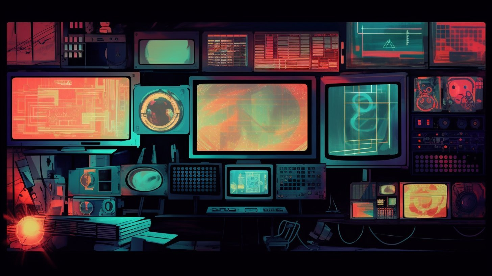

This page outlines how we structure, maintain, and grow a shared audiovisual archive that remains useful, searchable, and owned by the people who create it.

Two Types of Truth
The archive is maintained through a clear separation of responsibilities:
Structural truth: What things are called and how they are organized. This includes file names, IDs, canonical forms, and the overall structure of the archive. The Archivist stewards metadata integrity and ensures the archive remains consistent and usable over time.
Semantic truth: What things mean. This includes topics, concepts, and how recordings are understood and connected. The Storyteller adds context, narrative, and discoverability so recordings can be explored and learned from.
This separation ensures the archive remains both coherent and flexible as it grows.
How the Archive Works
This plays out in two layers.
The Archivist ensures recordings are structured, consistent, and usable over time. This includes organizing files, maintaining metadata, and keeping the archive coherent as it grows.
The Storyteller adds context and meaning to recordings. This includes shaping titles, highlighting key ideas, and connecting recordings so they can be explored and understood.
These roles operate independently, but build on the same shared archive.
Success means someone discovers the recording years later and can immediately understand what it is and use it.
How the Archive is Structured
The archive has two layers:
Storage — raw recordings and files
Metadata — structured information about those recordings
Files are stored in shared storage, organized by event or project.
Metadata is stored as file in a repository. Each metadata file references the corresponding files in storage, linking structure to content.
The system uses simple tools (shared storage, YAML metadata, and a task list) and is designed to remain portable and easy to maintain.
Tools We Like
Text-first workflows, spreadsheets, and simple publishing/index approaches.
Outcome
Over time, this approach leads to a different kind of archive:
- A searchable archive (not a media dump)
- A navigable knowledge base (not just videos)
- A growing map of ideas across FOSS and decentralized tech communities
The goal is simple: recordings that remain useful long after they are created.
Want to contribute?
If this way of working resonates, there are ways to get involved.
We’re always looking for people who care about documentation, storytelling, and building shared knowledge.